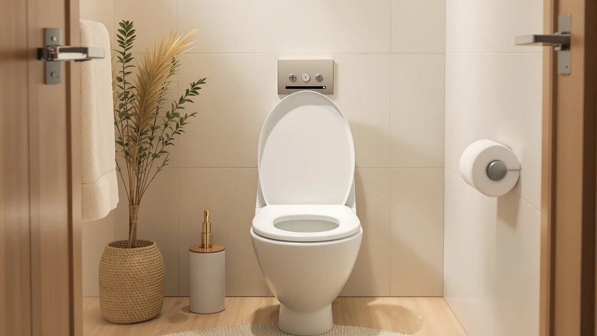

Best Disposable Toilet Seat Covers for Travel & Public Restrooms (2026)
Prices and picks verified as of August 2026. Independent, reader-supported reviews.


Quick Answer
Among the best disposable toilet seat covers we compared, the MP MOZZPAK Toilet Seat Covers offer the strongest mix of value and portability, with 60 individually wrapped XL covers in a case that fits a purse or diaper bag. If you use public restrooms daily or you're stocking a household for potty training, a 100-count pack like the Traletry or SFOPORD option below lowers the cost per cover even further.
Our pick: MP MOZZPAK Toilet Seat Covers, $6.99 Check Price on Amazon
Bottom line: our top pick is the MP MOZZPAK Toilet Seat Covers Disposable at $6.99. The best budget option is the 60 Pcs XL disposable flushable toilet seat covers 100% at $5.99.
Things to Know Before You Buy
- Pack size ranges from 20 to 100 covers among the disposable toilet seat covers we compared, so match the count to how often you actually use public restrooms.
- Most covers are individually wrapped, which keeps the stack sanitary in a bag but adds a bit of bulk compared with a loose, fan-folded stack.
- Flushable claims vary by brand. Check the packaging before flushing, especially with older plumbing or a septic system.
- XL sizing fits elongated toilet bowls better than standard covers, which can slip on larger seats.
- Price per cover swings widely across this list, from about 10 cents to over 80 cents, depending on pack size and brand.
We researched the best disposable toilet seat covers so you can carry a sanitary barrier for public restrooms without digging through a bag for something that actually works. Public toilet seats get touched, splashed, and cleaned inconsistently, and a thin paper or plastic cover solves that specific problem without requiring you to hover or line the seat with tissue.
We looked at eight covers ranging from compact 20-count travel packs to 100-count household boxes, priced from $6.99 to $24.99. Pack count and price per cover turned out to matter more than any single spec, since a cover that tears on first use or costs 80 cents a pop defeats the purpose of a disposable product. The MP MOZZPAK Toilet Seat Covers came out as our top pick for most people, balancing a low per-cover cost with a case that actually fits in a bag.
If you need more capacity for a household managing potty training or daily public-restroom trips, the 100-count packs from Traletry, MP MOZZPAK, and SFOPORD all bring the cost down to roughly 10 cents per cover. We break down what separates each pick below, including the honest tradeoffs, and link to antimicrobial toilet seats and easy-to-clean toilet seats if hygiene at home is your bigger concern.
Why You Should Trust Us
Ilane Tall covers bathroom fixtures and accessories for Best Toilet Seats, and this guide follows the same research standard we apply across the site. We do not run a fake testing lab, and we do not claim to have physically tried every disposable toilet seat cover on this list. Instead, we compared pack counts, sizing, and pricing across current Amazon listings, then cross-checked that data against verified buyer reviews to separate genuine wear-and-tear complaints from one-off shipping issues.
We flagged any brand claims about flushability or fit that reviewer feedback could not confirm, rather than repeating the marketing copy as fact.
How We Picked
We started with every disposable toilet seat cover option in our product database that had enough recent reviews to judge reliability, then narrowed the field with four filters. Pack size had to be clearly stated and consistent with the price, since a few listings inflate count claims relative to what buyers actually receive. We prioritized individually wrapped covers over loose, fan-folded stacks, since wrapping keeps the covers sanitary inside a bag over weeks of carry.
Every finalist needed a stated fit for standard or elongated seats, because a cover that slides on an oversized bowl fails at its one job. We also excluded any listing with a repeated pattern of complaints about covers tearing on first use or arriving damaged. The eight covers below cover a range of needs, from daily commuters who want the lowest per-cover cost to parents managing toddler potty training in public restrooms.
How We Compared
The most useful signal for disposable toilet seat covers, according to verified buyers, is how the cover holds up mid-use, not how it looks in a product photo, so we weighted reviews heavily in this comparison. We lined up specs side by side for each pack: cover count, price per cover, stated size, and whether the listing claimed the cover was flushable.
We then read through verified buyer feedback for each product, looking specifically for repeated mentions of tearing, sliding, or covers that felt too small for elongated bowls. A pattern showed up across several listings: individually wrapped covers survive longer in a bag or car without turning into a folded mess, so we flagged that detail for every pick below. Where a brand's flushable claim came up in reviews, either confirmed or disputed by owners, we included that context in the individual write-ups rather than taking the packaging at its word.
Our Picks

MP MOZZPAK Toilet Seat Covers
What we like
- 60 individually wrapped covers keep the stack clean between uses
- XL sizing fits most elongated toilet bowls
- Compact case is easy to drop in a purse, backpack, or glovebox
Flaws but not dealbreakers
- The travel case has no strap or clip, so it can slide around loose in a bag
- At 60 covers, frequent travelers will restock faster than with the 100-count packs on this list
| Material | Plastic / wood |
| Size | XL (60 Count) |
MP MOZZPAK's XL covers are built around a simple idea: keep the pack small enough to carry daily but the covers big enough to actually cover an elongated seat. Each of the 60 covers in the pack is individually wrapped, which matters more than it sounds. A loose stack of paper covers picks up lint and moisture in a bag over a few weeks, and individually wrapped covers do not.
At $6.99 for 60 covers, the per-cover cost lands around 12 cents, competitive with every pack on this list except the two 100-count options. Multiple reviews mention that the covers hold their shape well when set down on a wet or uneven seat, a common failure point for thinner paper covers. The main tradeoff is capacity. Sixty covers cover roughly two months of occasional public restroom use, so if you're stocking a car or a desk drawer for backup rather than daily carry, one of the 100-count packs below needs fewer reorders.

60 Pcs XL disposable flushable
What we like
- Listed as flushable and confirmed by reviewers, which matters for septic-conscious households
- XL sizing matches the MOZZPAK pack for elongated bowl coverage
- $6.99 for 60 covers keeps the per-cover cost near 12 cents
Flaws but not dealbreakers
- Reviewers note the wrapping is thinner than some competitors, so it can tear if you're not careful opening it
- No dedicated travel case included, only a resealable pouch
| Material | Plastic / wood |
| Size | XL 60 Pcs |
DISPOZIT's pack covers the same ground as the MOZZPAK pick above, 60 XL covers for $6.99, but leads with a flushable claim that owners have actually put to the test. That distinction matters if you're traveling somewhere with older plumbing or a septic system, where a cover that needs to go in the trash instead of the bowl is a genuine inconvenience.
Buyers who put the flushable claim to the test say the covers dissolve without clogging when flushed one at a time, though several also mention the outer wrapping tears more easily than sturdier packs on this list. That's a minor issue at home, but it's worth being careful about if you're digging one out of a bag one-handed in a public stall. At the same price and cover count as our top pick, this is the pack to choose specifically when flushability is the deciding factor.

Toilet Seat Covers Disposable Flushable
What we like
- Reviewers describe the material as noticeably thicker than the budget multi-packs on this list
- 30-count size fits easily in a suitcase side pocket for a week-long trip
- Individually wrapped covers stay clean in luggage
Flaws but not dealbreakers
- At $24.99 for 30 covers, the per-cover price is roughly 83 cents, by far the highest on this list
- The smaller count means daily users will run out well before the 60- and 100-count packs
| Material | Plastic / wood |
| Size | 30 pack |
LooREADY's 30-pack sits apart from the rest of this list mainly on price. At $24.99 for 30 covers, it costs about seven times more per cover than the budget XL packs above. That premium buys a noticeably thicker cover, according to owners who have used both this pack and cheaper alternatives, with less flex when set down on a wet seat.
This pack makes the most sense as a short-trip companion rather than an everyday carry item. Thirty covers is enough for a week of travel with covers to spare, but it isn't an economical choice for someone who needs a public-restroom cover most days. If your main concern is durability over a few uses rather than stretching your budget across months, this is the pack that trades cost for material quality.

Traletry Toilet Seat Covers Disposable
What we like
- 100 covers at $9.99 works out to about 10 cents per cover, among the lowest per-unit costs on this list
- XL sizing covers elongated bowls the same as the smaller packs above
- Bulk count means fewer reorders for households with kids in potty training
Flaws but not dealbreakers
- The larger 100-count box is bulkier than the compact travel cases on the lower-count packs
- A few reviewers mention the wrapping seal can loosen if the box is tossed around in a bag
| Material | Plastic / wood |
| Size | XL (Pack of 100) |
Traletry's 100-count box is built for volume. At $9.99 for 100 XL covers, it costs about 10 cents per cover, tying it with the MP MOZZPAK 100-count pack below as the least expensive option we compared per use. For a family managing potty training or anyone who uses public restrooms daily, that math adds up over a few months.
The tradeoff for that value is size. A box of 100 individually wrapped covers takes up more room than the slim travel packs above, so this works better as a car or diaper-bag staple than a purse item. According to verified reviews, the covers hold up well through the wrapping and unwrapping that comes with frequent use, and the XL size fits elongated bowls without the sag some smaller covers show on oversized seats.

MA CHÉRIE Disposable Toilet Seat
What we like
- Comes in a slim carrying case rather than a plain box, which reviewers say fits easily in a purse or bag pocket
- 60 individually wrapped covers at $9.99 works out to about 17 cents per cover
- Reviewers note the covers are large enough to fully cover standard and larger seats
Flaws but not dealbreakers
- Per-cover cost is higher than the 100-count packs on this list
- The case design is more rigid than a flat pouch, so it takes up slightly more space in a small bag
| Material | Plastic / wood |
| Size | 1 Count (Pack of 60) |
MA CHÉRIE's pack lands in the middle of this list on both price and count, 60 covers for $9.99, or about 17 cents each. Where it stands out is the case. Instead of a plain cardboard box, the covers come in a slim, purse-ready case that reviewers describe as more convenient to grab in a hurry than digging through a loose stack.
That convenience comes at a modest premium over the bulk 100-count packs, since part of the price covers the case design rather than only the cover count. The covers themselves are comparable in size and coverage to the other XL options here, and tearing or slipping doesn't come up as a repeated complaint in the reviews. For someone who prioritizes a grab-and-go case over the lowest possible per-cover cost, this is a reasonable middle ground.

MP MOZZPAK Toilet Seat Covers
What we like
- 100 XL covers at $9.99 brings the per-cover cost down to about 10 cents, matching Traletry's bulk pack
- Same individually wrapped format as the smaller MOZZPAK pack, which reviewers already rate well for staying clean in transit
- XL sizing is consistent with the rest of the MOZZPAK line
Flaws but not dealbreakers
- 100 covers is more supply than occasional travelers need, so the smaller 60-count MOZZPAK pack may fit better for light users
- Box packaging is bulkier than the case-style options on this list
| Material | Plastic / wood |
| Size | XL (100 Count) |
This is the larger sibling to our top pick, same MOZZPAK brand, same individually wrapped XL format, but scaled up from 60 to 100 covers for the same $9.99 that MA CHÉRIE charges for 60. That makes it one of the better bulk values we compared, on par with Traletry's 100-count pack.
For someone who already likes the smaller MOZZPAK pack and wants to stock up rather than reorder every couple of months, this is the straightforward upgrade. Reviewers who have used both sizes report no difference in cover quality between the two, only a bigger box. The only reason to skip it in favor of the 60-count version is wanting a slimmer travel case rather than bulk storage.

Relyo Disposable Toilet Seat Cover
What we like
- Smaller 20-count size means less commitment if you're trying disposable covers for the first time
- Individually wrapped covers keep the smaller stack sanitary
- Compact size fits easily in a small bag or car console
Flaws but not dealbreakers
- At $9.99 for 20 covers, the per-cover cost is about 50 cents, the second-highest on this list
- Frequent users will burn through this pack quickly and need to reorder often
| Material | Plastic / wood |
| Size | 20 Count (Pack of 1) |
Relyo's pack is the smallest count on this list at 20 covers, priced at $9.99. That works out to roughly 50 cents per cover, more than four times the cost of the bulk 100-count packs above. The tradeoff is a lower upfront commitment, which makes sense if you're not yet sure disposable covers are something you'll use regularly.
Reviews on this pack read about the same as the other individually wrapped options here, with no notable complaints about size or tearing. Where this pack makes sense is as a low-risk way to test the format, in a glovebox, a work bag, or a kid's backpack, before committing to a larger box. For regular use, though, the per-cover math clearly favors the 60- and 100-count packs elsewhere on this list.

SFOPORD XL 100PCS Toilet Seat
What we like
- 100 XL covers at $9.99 ties Traletry and MOZZPAK for the lowest per-cover cost on this list, about 10 cents each
- XL sizing covers elongated bowls consistent with the other picks
- Individually wrapped covers keep the stack sanitary in storage
Flaws but not dealbreakers
- With three similarly priced 100-count packs on this list, brand loyalty or case design is likely the deciding factor over price
- Box packaging takes up more space than the smaller travel cases
| Material | Plastic / wood |
| Size | XL |
SFOPORD rounds out the bulk end of this list with a third 100-count XL pack at $9.99, tying Traletry and the larger MOZZPAK pack on price and count. If you have already decided that a 100-count box is the right size for your household, this is one of three nearly identical options on cost.
Buyer feedback puts the covers in line with expectations for size and durability, without the tearing or fit complaints that show up on some cheaper listings elsewhere on Amazon. Since the per-cover math is essentially the same across all three 100-count packs on this list, the deciding factor between them often comes down to packaging preference or brand familiarity rather than any meaningful difference in quality.
Quick Comparison
| Product | Material | Price | Rating | Best for | Get it |
|---|---|---|---|---|---|
| MP MOZZPAK Toilet Seat Covers | Plastic / wood | $6.99 | 4 | Compact everyday carry | View on Amazon → |
| 60 Pcs XL disposable flushable | Plastic / wood | $6.99 | 4 | Flushable-conscious households | View on Amazon → |
| Toilet Seat Covers Disposable Flushable | Plastic / wood | $24.99 | 4 | Short trips, thicker material | View on Amazon → |
| Traletry Toilet Seat Covers Disposable | Plastic / wood | $9.99 | 4 | Bulk buyers on a budget | View on Amazon → |
| MA CHÉRIE Disposable Toilet Seat | Plastic / wood | $9.99 | 4 | Purse-ready travel case | View on Amazon → |
| MP MOZZPAK Toilet Seat Covers | Plastic / wood | $9.99 | 4 | Stocking up on MOZZPAK | View on Amazon → |
| Relyo Disposable Toilet Seat Cover | Plastic / wood | $9.99 | 4 | Light or first-time use | View on Amazon → |
| SFOPORD XL 100PCS Toilet Seat | Plastic / wood | $9.99 | 4 | Bulk buyers comparing brands | View on Amazon → |